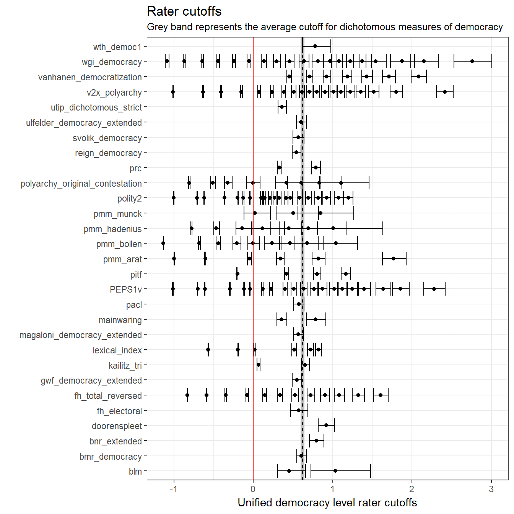
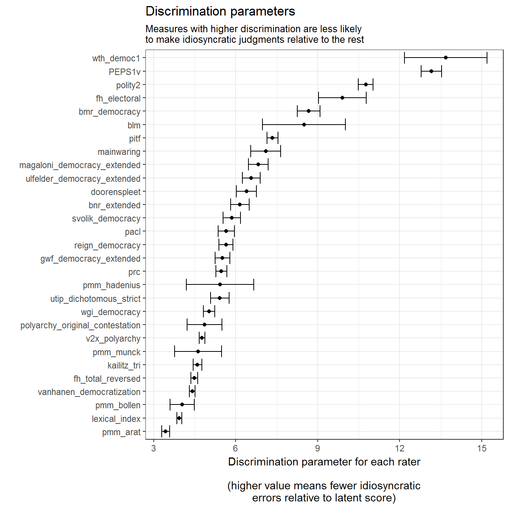
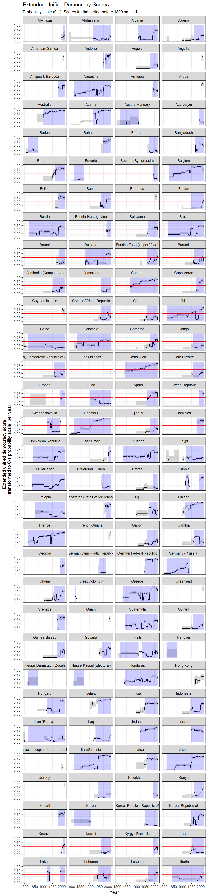
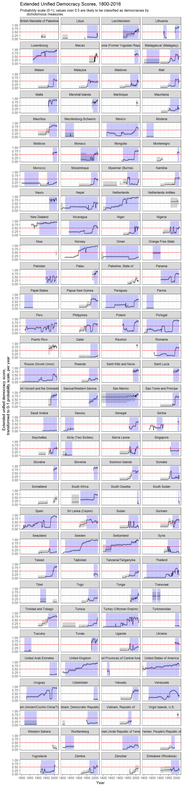

The extended_uds dataset can be generated with the following code:
library(dplyr)## Warning: package 'dplyr' was built under R version 3.4.2##
## Attaching package: 'dplyr'## The following objects are masked from 'package:stats':
##
## filter, lag## The following objects are masked from 'package:base':
##
## intersect, setdiff, setequal, unionlibrary(QuickUDS)## Loading required package: mirt## Loading required package: stats4## Loading required package: latticemeasures <- c("pmm_arat", "blm", "bmr_democracy",
"bnr_extended", "pmm_bollen", "doorenspleet",
"wgi_democracy","fh_total_reversed",
"fh_electoral", "gwf_democracy_extended",
"pmm_hadenius", "kailitz_tri",
"lexical_index", "mainwaring",
"magaloni_democracy_extended",
"pmm_munck", "pacl", "PEPS1v",
"pitf", "polity2", "reign_democracy",
"polyarchy_original_contestation",
"prc", "svolik_democracy",
"ulfelder_democracy_extended",
"utip_dichotomous_strict", "v2x_polyarchy",
"vanhanen_democratization", "wth_democ1")
# Generate Extended UDS
extended_model <- democracy_model(measures,
verbose = FALSE,
technical = list(NCYCLES = 2500))
extended_scores <- democracy_scores(model = extended_model)The model takes about 1-2 minutes to converge on my machine, and accounts for more than 90 per cent of the variance in the various democracy indexes used:
extended_model@time## TOTAL: Data Estep Mstep SE Post
## 98.36 1.28 40.02 47.64 9.36 0.00# Number of iterations, log likelihood, etc.
extended_model##
## Call:
## mirt::mirt(data = data %>% select(cols$measures), model = 1,
## itemtype = "graded", SE = TRUE, verbose = verbose, technical = technical)
##
## Full-information item factor analysis with 1 factor(s).
## Converged within 1e-04 tolerance after 1720 EM iterations.
## mirt version: 1.25
## M-step optimizer: BFGS
## EM acceleration: Ramsay
## Number of rectangular quadrature: 61
##
## Information matrix estimated with method: Oakes
## Condition number of information matrix = 9638.871
## Second-order test: model is a possible local maximum
##
## Log-likelihood = -211366.9
## Estimated parameters: 189
## AIC = 423111.9; AICc = 423114.6
## BIC = 424657.2; SABIC = 424056.6# Correlations of latent factor with source variables, variance accounted for, etc.
summary(extended_model)## F1 h2
## pmm_arat 0.897 0.804
## blm 0.981 0.962
## bmr_democracy 0.981 0.963
## bnr_extended 0.964 0.928
## pmm_bollen 0.922 0.850
## doorenspleet 0.966 0.934
## wgi_democracy 0.954 0.910
## fh_total_reversed 0.936 0.876
## fh_electoral 0.986 0.972
## gwf_democracy_extended 0.956 0.913
## pmm_hadenius 0.954 0.911
## kailitz_tri 0.938 0.880
## lexical_index 0.918 0.843
## mainwaring 0.973 0.946
## magaloni_democracy_extended 0.970 0.942
## pmm_munck 0.939 0.881
## pacl 0.958 0.917
## PEPS1v 0.992 0.983
## pitf 0.974 0.949
## polity2 0.988 0.975
## reign_democracy 0.957 0.916
## polyarchy_original_contestation 0.944 0.892
## prc 0.955 0.912
## svolik_democracy 0.960 0.922
## ulfelder_democracy_extended 0.968 0.937
## utip_dichotomous_strict 0.954 0.910
## v2x_polyarchy 0.942 0.888
## vanhanen_democratization 0.933 0.871
## wth_democ1 0.992 0.985
##
## SS loadings: 26.571
## Proportion Var: 0.916
##
## Factor correlations:
##
## F1
## F1 1The cutpoints and discrimination parameters of these scores can be obtained as follows:
library(ggplot2)
dichotomous <- cutpoints(extended_model) %>%
group_by(variable) %>%
filter(n()==1) %>%
ungroup() %>%
summarise(avg_estimate = mean(estimate),
avg_se = sqrt(sum(se^2)/n() ^ 2 )) %>%
mutate(avg_pct975 = avg_estimate + 1.96*avg_se,
avg_pct025 = avg_estimate - 1.96*avg_se)
xmax <- cutpoints(extended_model) %>%
pull(variable) %>%
unique() %>%
length()
xmax <- xmax + 1
cutpoints(extended_model) %>%
ggplot(aes(x=variable,
y = estimate,
ymin = pct025,
ymax=pct975)) +
theme_bw() +
geom_rect(ymin = dichotomous$avg_pct025, ymax = dichotomous$avg_pct975,
xmin = 0, xmax = xmax, alpha = 0.2, fill = "grey") +
geom_hline(yintercept = dichotomous$avg_estimate,
color="black", linetype = 2) +
labs(x = "",
y = "Unified democracy level rater cutoffs",
title = "Rater cutoffs",
subtitle = "Grey band represents the average cutoff for dichotomous measures of democracy") +
geom_point() +
geom_errorbar() +
geom_hline(yintercept = 0,
color="red")+
coord_flip()
cutpoints(extended_model, type ="discrimination") %>%
ggplot(aes(x=reorder(variable, estimate),
y = estimate, ymin = pct025, ymax = pct975)) +
theme_bw() +
labs(x="",y="Discrimination parameter for each rater
\n(higher value means fewer idiosyncratic\nerrors relative to latent score)",
title = "Discrimination parameters",
subtitle = "Measures with higher discrimination are less likely \nto make idiosyncratic judgments relative to the rest") +
geom_point() +
geom_errorbar() +
coord_flip()
The democracy_scores function produces three types of scores: the original latent variable (z1), an “adjusted” score where 0 equals the cutpoint of the dichotomous democracy indexes (z1_adj) and a probability score (z1_*_as_prob) that is normalizes the other two to a 0-1 index, and can be interepreted as a kind of probability measure: country-years with scores close to 1 are almost certainly democratic, while country-years with scores close to 0 are almost certainly not, while 0.5 represents the cut-off between democracy and non-democracy.
These extended UD scores are available for 26273 country-years (248 unique countries and non-sovereign territories):


(Grey shaded areas represent 95% confidence intervals; blue shaded areas are periods where the country is either deemed to be a member of the system of states in the Gleditsch and Ward list of state system membership since 1816, i.e., independent, or is a microstate in Gleditsch’s tentative list).